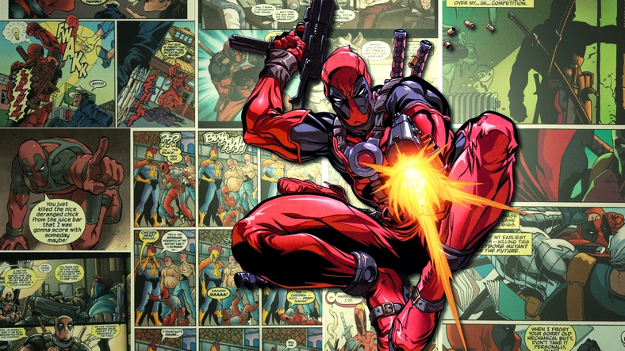

Le quatrième mur a plus d’une définition et plus d’une fonction. Certains acteurs s’en servent, d’autres tentent de le péter, avec plus ou moins de réussite, les bougres. Dans cet article, nous comprendront ce qu’est et à quoi sert le (bris du) quatrième mur, au cinéma et dans la pop culture.
Commençons par une note d’histoire et éloignons-nous du cinéma un moment pour aller s’intéresser d’abord au théâtre, à la dramaturgie et à certains aspects techniques, histoire de pouvoir se la péter avec les potes en soirée. Si tu n’aimes pas ce qui est histoire ou que tu n’as pas d’amis pour les éclabousser de ton savoir, tu peux passer la partie chiante et descendre jusqu’à ce que tu voies un babouin en bonnet à motifs dansant le carioca.
Le terme de quatrième mur est né au théâtre. Au XVIIème siècle, on s’interroge sur les mutations du théâtre contemporain et notamment sur la manière dont la tragédie et la comédie peuvent emprunter l’un à l’autre. Pour susciter l’émotion du spectateur, il faudrait à la fois de cette distance imposée par la tragédie ancienne et de cette proximité privilégiée par la comédie. Pour favoriser le rapprochement entre le spectateur et la représentation, on commence à s’intéresser au réalisme, pour être au plus proche d’une représentation de la vie. C’est ainsi que naît la notion de quatrième mur, qui doit avoir pour effet de provoquer l’émotion du spectateur en le séparant, paradoxalement, de la scène. – Sarah Beaulieu, métafictions.fr
Le terme de « Quatrième mur » est inventé par Denis Diderot, grand philosophe, écrivain et critique d’art du XVIIIème siècle. Dix-huit, c’est le 18e siècle ça. Et c’est entre 1700 et 1799. Sait-on jamais. Il définit le quatrième mur ainsi : « Dans la représentation dramatique, il s’agit non plus du spectateur que s’il n’existait pas ». Oui c’est très hype. Il la retouche ensuite, de manière plus explicite, par ce conseil destiné à l’acteur :
« Imaginez, sur le bord du théâtre, un grand mur qui vous sépare du parterre ; jouez comme si la toile ne se levait pas. »
Pierrot le fou (Jean-Luc Godard, 1965)
Le quatrième mur est donc un concept pour créer une sorte de barrière virtuelle entre l’acteur et le spectateur, de telle sorte que les comédiens puissent jouer sans se soucier du public comme s’ils étaient seuls sur scène. Ce qui poussait parfois les acteurs à jouer dos au public, par exemple.
Par contre, tout le monde ne le voyait pas de ce point de vue là. D’autres dramaturges et metteurs-en-scène comme Bertolt Brecht (1898-1956), pensaient que le quatrième mur sert à « prendre ses distances par rapport à la réalité », interdisant à l’acteur l’identification à son personnage. Ceci a pour objectif de produire l’effet inverse sur le public. Ce dernier prendra ses distances, par rapport au personnage (à la fiction) et non aux acteurs, le renvoyant à sa condition de spectateur (ou de lecteur dans la littérature). Dans ses pièces de théâtre et ses mises en scène (à Brecht), l’acteur doit donc plus raconter qu’incarner, susciter la réflexion et le jugement plus que l’identification. Dans un certain sens, il y a ici un double quatrième mur. Le premier entre le spectateur et l’acteur, puisque le but est que ce dernier suscite chez le spectateur la réflexion et non l’identification. Sans me répéter hein. Le second entre l’acteur et le personnage qu’il incarne car il ne doit pas s’y identifier. C’est le principe de distanciation (avec l’accent espagnol c’est plus rigolo).
Mais initialement, le principe du quatrième mur est le fait d’aider l’acteur à entrer dans son personnage pour que le spectateur puisse mieux s’identifier à lui. Le concept de distanciation brise cette identification et brise donc, le quatrième mur. Tu la vois, la transition de folie ?

The Big Lebowski (Joel & Ethan Coen, 1998)
Bon, maintenant que vous avez assez d’informations pour blablater durant tout un dîner, passons aux diverses utilisations du pétage de quatrième mur.
J’aurais bien voulu vous faire une jolie intro écrite mais un jeune fan de My Little Poney sur le forum MyLittlePoneyFictions l’a fait, excellemment bien, d’ailleurs je vous conseille et vous invite à lire cette petite fiction qu’on peut télécharger ici, c’est très drôle et ça explique très bien comment « briser le quatrième mur » dans la littérature.
Ce concept de métafiction qu’est de « briser le quatrième mur » est le fait qu’une œuvre ou qu’un personnage sorte du contexte fictionnel (qu’il devienne conscient qu’il n’est que fiction) pour venir s’adresser au spectateur ou au lecteur ou alors lui rappeler de quelque manière qui soit qu’il est en train de regarder ou lire une œuvre fictionnelle.
Le bris (parce qu’on dit bris, oui) du quatrième mur a moult formes/facettes et utilisations. Le plus souvent il est mis-en-scène de manière humoristique pour ajouter de la légèreté à l’œuvre (Ferris Bueller, Top Secret). Mais beaucoup de réalisateurs en ont usé plus subtilement et très intelligemment pour servir le propos de leur film. Avec plus ou moins de succès.
{kind=link}
Le Funny Games d’Haneke en est le parfait exemple. Beaucoup lui reprochent justement sa présence et le fait qu’il casse l’immersion du spectateur mais en fait, que nenni! Non seulement l’action de briser le mur sert l’histoire, mais elle permet d’impliquer directement le spectateur en le plongeant émotionnellement dans les moments les plus intenses du film (le rendant aussi complice ?) tout en lui faisant un joli doigt d’honneur à la fin de ceux-là. Haneke l’utilise tellement pertinemment qu’il en devient essentiel dans la construction du film. Il n’aurait pas fonctionné sans bris du quatrième mur et c’est ce qui en fait une de ses utilisations les plus pertinentes et « percutantes » du cinéma.
D’autres l’utilisent de manière franche et directe et un peu rentre-dedans, comme dans Annie Hall (1977) de Woody Allen où lui-même nous interpelle pour nous faire part de son agacement dans plusieurs situations. Il récidive avec Whatever Works (2009) où Larry David commente certaines actions du film et parle ouvertement du public dans la salle de cinéma. Parfois c’est à la place du narrateur que l’acteur principal prend la parole comme DiCaprio dans The Wolf of Wall-Street (2013).
Mais défoncer le quatrième mur, comme dit plus haut, est une sorte de distanciation, elle empêche au spectateur l’identification et parfois l’immersion dans le film voire même de ne plus ressentir d’empathie pour le personnage. Et bah en fait, ce n’est pas toujours le cas. Parfois, son utilisation renforce le sentiment d’empathie et/ou l’identification et/ou l’immersion. Oui m’dame, ou ‘msieu. Ou petit elfe de Birmanie équatorienne.
{kind=link}
Et pour reprendre le dernier cité, plusieurs films, avant générique de début, défonce sa mère la chienne au quatrième mur pour « présenter » le film, histoire d’introduire le récit qui va suivre. Le trou (1960) de Jacques Becker en est un bon exemple, Jean Keraudy qui joue le rôle de Roland Darbant introduit le film disant que celui-ci racontera son histoire car lui-même était réellement impliqué dans une tentative d’évasion 15 ans plus tôt, tout cela donna comme résultat le film français préféré de Yanis Kheloufi si ce n’est le meilleur du cinéma français. Même chose dans Bronson (2008) de Nicolas Winding Refn, Tom Hardy qui joue Charles Bronson. Une des utilisations les plus intéressantes dans ce cas-là est celle de l’un des meilleurs films de Tim Burton, Ed Wood (1994) dont on vous parlait ici. Au début du film, le personnage de Criswell joue son rôle de présentateur -ce que le « vrai » Criswell était effectivement- et présente la fiction dans laquelle il sera lui-même personnage (Jeffrey Jones).
Une mise en abyme à la fois esthétique et narrative, qui a le mérite de présenter l’univers d’Ed Wood (et de Tim Burton…) en une minute, tout en introduisant le récit comme un conte. Nous reconnaissons les codes du conte de fées (« il était une fois… »), mais également ceux de la présentation de programmes auxquels la télévision nous a rapidement habitués. – Sarah Beaulieu, métafictions.fr
Outre les personnages qui s’adressent directement à nous, certains quatrièmes murs sont brisés de manière plus subtile, plus habile, je dirais même plus rusée. En effet, on peut parfois le briser sans que le spectateur s’en rende compte. Tout est dans les petits détails… Cela peut être une référence, comme dans Die Hard 2 (1990) quand Bruce Willis pense tout haut « I can’t fucking beleive this. How can the same shit happen to the same guy twice?! », ou une phrase prononcée dans laquelle on parle soit d’un acteur qui a un rôle dans ce même film ou alors parler du créateur/réalisateur, comme dans les Simpsons, qui brisent ce putain de quatrième mur magistralement. Une beauté.
{kind=link}
Toujours dans le subtil et dans le détail, Fight Club (1999) est surtout connu pour la scène où Edward Norton s’adresse au spectateur pour lui expliquer ce que fait Tyler Durden, mais on y voit surtout ce même Tyler montrer du doigt à l’écran la marque destinée au projectionniste du cinéma. Scène non moins connue, mais en soi (et sans l’intervention de Norton), est un bris du quatrième mur et un très joli, de surcroît.
Mais souvent, les personnages ne parlent pas directement à la caméra, ils ne font que la regarder et parfois il y résulte de très jolis 4th wall breaking. Et les regards-caméra, il y en a beaucoup (à l’exception de l’effet de la caméra subjective dans les dialogues). On peut citer Into The Wild (2008) où Emile Hirsch fait une grimace à la caméra alors qu’il mangeait sa pomme, ou le regard glaçant au tout début de Orange Mécanique (1984) et j’en passe et des meilleurs. Mais mon préféré reste celui dans Death Proof (2008) quand Stuntman Mike, avant d’offrir à la fille un lift dans sa voiture, prend une pause et bam! Il nous lance ce regard vicieux. Un regard qui nous rendrait presque coupable, car il nous fait dire « Merde, il va la tuer et il sait que je le sais. » et c’est magnifiquement bien fait !
{kind=link}
Parfois moins subtil mais toujours sans s’adresser à la caméra. Dans Le Retour des tomates tueuses (1988) avec George Clooney, à un moment la scène s’arrête et la caméra se retourne pour nous montrer le réalisateur qui stoppe le tournage car il n’y plus d’argent dans les caisses. L’acteur principal, Clooney, propose de faire du placement de produit. Dans la scène suivante, on le voit faire la publicité d’une marque de soda. Pour ne pas dire Pepsi.
Toujours dans le bris du mur et là, au sens propre du terme. Dans Le shérif est en prison (Blazing Saddles) (1974), lors d’une bataille entre des hors-la-loi et des habitants de Rock Ridge, ces derniers quittent le studio de Warner Bros et font irruption dans un plateau de tournage d’une comédie-musicale, cassant au passage le mur du décor (joli!), ils passent par la cafétéria et en profitent pour faire une bataille de gâteaux avant de finir leur bagarre dans la rue. Culte.
{kind=link}
Blazing Saddles (Mel Brooks, 1974)
D’autres utilisent ce procédé pour en faire tout un film, comme Spaceballs (1987) dont les personnages visionnent une cassette du film dans lequel ils jouent pour savoir ce qu’il se passe dans le film, une mise en abyme intéressante. Last Action Hero (1993) avec Schwarzie est aussi une mise en abyme et raconte l’histoire d’un enfant qui grâce à un ticket de cinéma magique arrive à entrer dans le film qu’il regarde, dans ce cas c’est Jack Slater IV (un film dans un film) dont il est fan et dont l’acteur principal est Arnold Schwarzenegger. Oui, même ana telfetli. Ce film est en plus bourré de références, les fans de films d’action et policiers seront gâtés.
On retrouve sur le net moult compilations et montages des plus beaux bris de quatrième mur au cinéma, voici celles de Leigh Singer dont la première partie est ci-dessous et la seconde sur viméo en cliquant ici.
Dans beaucoup d’autres domaines, le quatrième mur est brisé. Contrairement au théâtre, ce mur est physique quand il s’agit de cinéma, de jeux-vidéos, de bande-dessinée ou de littérature (c’est l’écran ou la page). Il y en a moult, mais certains sont très intéressants.

Outre le sublime bris des Simpsons cité plus haut, le superhéros Deadpool de l’univers Marvel est un des meilleurs exemples de 4th wall breaking et de plus, un des plus particuliers et des plus pertinents.
Deadpool sans son masque troll Ryan Reynolds qui joue son rôle dans l’adaptation ciné
En effet, l’originalité de Deadpool réside dans le fait qu’il est conscient du fait que c’est un superhéros et que de ce fait, c’est un personnage de fiction. Il discute régulièrement avec les bulles de narration, s’entretient tour à tour avec le dessinateur ou le lecteur, commente l’endroit de l’intrigue où il se trouve. L’endroit, au sens physique du terme, soit le numéro de la case, de la page, ou n’importe quelle référence au contenu direct du support : la bande-dessinée. A la question, « Où sommes-nous ? » il répondra « Bah, page 18 case 4 ! »
Bien qu’il fallait obligatoirement que je cite Deadpool dans mon article, Sarah Beaulieu du webzine métafictions.fr l’a déjà fait et a tout dit. Je n’ai rien à ajouter à part vous inviter à lire son analyse, assez complète.
Mais le pouvoir de Deadpool, cette conscience qu’il a de son statut et son apparente liberté, sont évidemment créés de toutes pièces. Il ne s’agit que d’un procédé narratif qui définit également une partie de la caractérisation du personnage. Et c’est en cela que le pouvoir de Deadpool est troublant et tend à rendre le personnage sympathique, malgré ses accès de violence ou de misogynie. En effet, en réduisant la distance entre le lecteur et Deadpool, le procédé abaisse la barrière entre fiction et réalité et nous laisserait presque croire à une apparition réelle du super-héros au coin de la rue. (…) Deadpool souffre de ses blessures physiques, mais également de sa mentalité instable, dont il est tout à fait conscient, et ses adresses constantes au lecteur, souvent ironiques, lui confèrent presque l’image d’un « bon copain ». Ce personnage psychotique en devient curieusement attachant. La popularité de Deadpool n’a cessé de grimper ces dernières années et c’est cette relation particulière avec le lecteur, produite par l’abolition du quatrième mur, qui semble en être la raison principale. – Sarah Beaulieu, métafictions.fr
Dans Dragon Ball aussi, on en a défoncé pas mal, de cases et e quatrième mur. En voici deux jolis exemples :
{kind=link}
{kind=link}
Quand on parle de quatrième mur, on pense rarement aux jeux-vidéos. Le joueur, manette ou souris en main, est, dès le tutoriel de début du jeu par exemple, confronté à un bris de quatrième mur de manière indirecte. Le jeu lui demandant d’appuyer sur telle ou telle touche ne cessera point de le lui rappeler. Logiquement, c’est cela. Mais, car il y en a un « mais ». Vous ne l’attendiez pas celui-là, hein ? Bon, d’accord, j’arrête mes cocasseries.
Mais certains jeux-vidéos à l’image de Metal Gear Solid le font à merveille, d’ailleurs, c’est à ce jeu qu’on doit les meilleurs 4th wall breaking vidéo-ludiques. Dans le premier épisode (1998), juste avant d’affronter un méchant méchant, Psycho Mantis, celui-ci nous déclare qu’il a le pouvoir de lire dans nos pensées, en réalité il arrive à lire les jeux présents dans notre carte-mémoire. Il aurait donc dit à certains « Rak tel3ab Castelvania ya wahed e’tehan ! », dit-on dans des forums de gamers aux pratiques pas très Charlie. Celui-ci vous demandera ensuite de poser votre manette au sol, pour ensuite la déplacer, en la faisant vibrer. Pour vaincre Psycho Mantis, il faudra que le joueur change le port de sa manette et la rebranche dans el port n°2. Classe. Dans ce même jeu, on nous demande d’aller à la recherche d’une fréquence, qu’on trouverait dans une « boite ». Premier réflexe : vérifier l’inventaire, ratisser les alentours, etc. mais le jeu faisait en fait référence au boitier du jeu, sur lequel la fréquence est affichée au dos de celle-ci. Et voici la raison pour laquelle aucun joueur algérien n’a pu finir ce jeu…
{kind=link}
Metal Gear Solid 2: Sons of Liberty (2001)
Konami récidive dans le deuxième (2001), troisième (2004) et quatrième épisode (2008), dans lesquels, respectivement, le Colonel Campbell ordonne au joueur d’éteindre la console prétextant qu’il joue depuis trop longtemps, ou alors le fait de pouvoir battre un boss en avançant l’horloge interne d’une semaine, ou quand Otacon demande à Old Snake de changer le disque du jeu. Dans le dernier MGS, Ground Zeroes (2014), lors de l’intro, Big Boss regarde la caméra et dit « Je me suis fait attendre pas vrai ? » référence aux 6 ans d’attente avant la sortie de ce nouvel MGS.
Et non, je n’ai pas oublié les séries-tv mais étant très proches des utilisations cinématographiques, je n’ai pas pensé nécessaire d’en faire toute une analyse. Cependant, certaines méritent d’être citées. Malcom ou House of Cards, qu’on ne présente plus, que ça soit la version américaine avec Kevin Spacey ou l’originale, britannique, avec Ian Richardson, cette série arrive à nous rendre complice des manipulations du personnage principal et ce, avec une telle finesse, qu’on regretterait même de ressentir de l’empathie envers les personnages quand ils sont en état de faiblesse ou de se laisser emporter par cet attachement que l’on ressent envers eux lors de leurs plus belles conspirations.
{kind=link}
Dans un registre plus comique, même très comique, voire excentrique, dans la série britannique A Bit Of Fry & Laurie, Hugh Laurie et Stephen Fry dont ils sont les créateurs, utilisent le continuellement le bris du quatrième mur dans leurs sketches, très intelligemment et souvent de manière aussi inopinée que calculée. Ils quittent souvent leur personnage, interrompant donc le sketch, pour aller discuter avec le public ou alors, ils montrent le studio ou l’équipe technique de tournage. Une série, légère, absurde et à l’humour british qui sent bon le thé de 16h30, que je ne saurais que recommander.
Bien sûr, ce ne sont pas les seuls et il y a beaucoup d’autres séries, généralement comédies, qui le font plus ou moins souvent dans quelques épisodes. La très bonne série 30 Rock l’a fait, et de bien des manières. On peut en retrouver quelques uns sur cette playist YouTube regroupant de très courtes vidéos où Tina Fey ou encore Alec Baldwin brisent le quatrième mur : petits regards caméra malicieux, monologue humoristique, parler de faux raccord et changer de tenue au plan suivant ou encore référence et critique des placements de produit à la télé. Pertinent et très drôle.
Pour conclure, voilà une compilation des quelques meilleurs 4th wall breaking sur petit écran :
Et c’est sur cette jolie photo mais non moins cocasse de Fry et Laurie, que je vous dis ce qu’InThePanda a comme devise, ciao et « que le cinéma vous guide ! »
{kind=link}